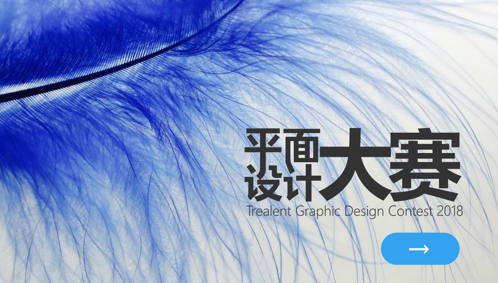

<!doctype html>
<html>
<head>
    <meta charset="utf-8">
    <meta name="viewport" content="maximum-scale=1.0,minimum-scale=1.0,user-scalable=0,width=device-width,initial-scale=1.0"/>
    <meta name="format-detection" content="telephone=no,email=no,date=no,address=no">
    <link rel="stylesheet" type="text/css" href="../../css/aui.css" />
    <style>
    body{
        background-color: #f5f5f5;
    }
    .task-card{
      width: 90%;
      box-shadow: 0 4px 8px 0 rgba(0, 0, 0, 0.2), 0 6px 10px 0 rgba(0, 0, 0, 0.19);
      margin-left: auto;
      margin-right: auto;
      border-radius: 10px;
    }
    .task-card-header{
      background: -webkit-linear-gradient(left, #868F96 , #596164); /* Safari 5.1 - 6.0 */
      background: linear-gradient(to right, #868F96 , #596164); /* 标准的语法 */
      width:100%;
      height:30px;
      text-align: center;
      line-height: 30px;
      font-size: 18px;
      font-weight: 400;
      color: #fff;
    }
    .my_padding{
      height: 20px;
    }
    .padding{
      height: 20px;
    }
    .aui-list-item:last-child{
      background-image: none;
    }
    .typecard{
      width: 40px;
      text-align: center;
      height: 100%;
      color: #fff;
      background-color: #03a9f4;
      font-size: 12px;
      font-weight: 400;
      border-radius: 5px;
    }
    /*.user-card-red{
      background: -webkit-linear-gradient(bottom right, #F78D91 , #FCA2A6);
      background: linear-gradient(to top left, #F78D91 , #FCA2A6);
    }
    .user-card-green{
      background: -webkit-linear-gradient(bottom right, #74DFBD , #9BEDD3);
      background: linear-gradient(to top left, #74DFBD , #9BEDD3);
    }
    .user-card-orange{
      background: -webkit-linear-gradient(bottom right, #FBB57C , #FCD69C);
      background: linear-gradient(to top left, #FBB57C , #FCD69C);
    }*/
    .task-card-header-success{
      background-color: #009688;
      width:100%;
      height:30px;
      text-align: center;
      line-height: 30px;
      font-size: 18px;
      font-weight: 400;
      color: #fff;
      margin-bottom: 10px;
    }
    .task-card-header-primary{
      background-color: #00bcd4;
      width:100%;
      height:30px;
      text-align: center;
      line-height: 30px;
      font-size: 18px;
      font-weight: 400;
      color: #fff;
      margin-bottom: 10px;
    }
    .task-card-header-warning{
      background-color: #ffc107;
      width:100%;
      height:30px;
      text-align: center;
      line-height: 30px;
      font-size: 18px;
      font-weight: 400;
      color: #fff;
      margin-bottom: 10px;
    }
    .task-card-header-danger{
      background-color: #FC9D9A;
      width:100%;
      height:30px;
      text-align: center;
      line-height: 30px;
      font-size: 18px;
      font-weight: 400;
      color: #fff;
      margin-bottom: 10px;
    }
    .aui-card-list-more{
        font-size:14px;
        line-height: 14px;
        min-height: 14px;
        color:#BCBCBC !important;
    }
    .loading-mask{
      position: absolute;
      z-index: 1000;
      width: 100%;
      height: 100%;
      background-color: rgba(255,255,255,1);
    }
    .loading{
      margin: 0.75rem auto;
      height: 1.3rem;
      width: 1.3rem;
    }
  </style>
</head>
<body>

  <div id="loading-mask" class="loading-mask"></div>
    <div class="my_padding"></div>
      <div id="task_published"></div>
</body>
<script type="text/javascript" src="../../script/doT.min.js" ></script>
<script id="tpl_task_published" type="text/dot-tpl">
  <div id="card-box">
  {{~it:value:index}}
  <div class="aui-content aui-margin-b-15">
        <div class="aui-card-list task-card">
            <div class="aui-card-list-header aui-card-list-user aui-border-b">
                <div class="aui-card-list-user-avatar">
                    
                </div>
                <div class="aui-card-list-user-name">
                    <div>{{=value.title}}</div>
                    <small>1天前</small>
                </div>
                <div class="aui-card-list-user-info">发布人:{{=value.demander.username}}</div>
            </div>
            <div class="aui-card-list-content-padded">
                
            </div>
          <div class="aui-card-list-content-padded" style="text-align:center">
            <div class="task-card-header">项目情况</div>
              <ul class="aui-list aui-list-in aui-list-noborder">
                  <li class="aui-list-item">
                      <div class="aui-list-item-inner">
                          <div class="aui-list-item-title">项目类型</div>
                          <div class="aui-list-item-right">
                              <div class="typecard"style="background-color:{{=type_return(value.type_id).bgColor}};">{{=type_return(value.type_id).type}}</div>
                          </div>
                      </div>
                  </li>
                  <li class="aui-list-item aui-list-item-middle" id="{{=value.id}}" tapmode onclick="openWaitingGroupList(this.id)">
                      <div class="aui-list-item-inner aui-list-item-arrow">
                          <div class="aui-list-item-title">竞标情况</div>
                        </div>
                  </li>
                  <li class="aui-list-item aui-list-item-middle" tapmode onclick="openProcessStatus()">
                      <div class="aui-list-item-inner aui-list-item-arrow">
                          <div class="aui-list-item-title">完成进度</div>
                        </div>
                  </li>
              </ul>
              <div class="task-card-header-primary" id="{{=value.id}}" onclick="StartTask(this.id)">开始任务</div>
              <div class="task-card-header-success" >发布通知</div>
              <div class="task-card-header-warning" id="{{=value.id}}" onclick="SubmitTask(this.id)" >确认完成</div>
              <div class="task-card-header-danger" >取消发布</div>
          </div>
      </div>
    </div>
  {{~}}
  {{? index==9}}
      <div class="aui-text-center aui-card-list-footer aui-card-list-more">加载更多</div>
  {{??}}
      <div class="aui-text-center aui-card-list-footer aui-card-list-more">没了欸~</div>
  {{?}}
  </div>
</script>

<script id="tpl_task_publishedMore" type="text/dot-tpl">
  <div >
  {{~it:value:index}}
  <div class="aui-content aui-margin-b-15">
        <div class="aui-card-list task-card">
            <div class="aui-card-list-header aui-card-list-user aui-border-b">
                <div class="aui-card-list-user-avatar">
                    
                </div>
                <div class="aui-card-list-user-name">
                    <div>{{=value.title}}</div>
                    <small>1天前</small>
                </div>
                <div class="aui-card-list-user-info">发布人:{{=value.demander.username}}</div>
            </div>
            <div class="aui-card-list-content-padded">
                
            </div>
          <div class="aui-card-list-content-padded" style="text-align:center">
            <div class="task-card-header">项目情况</div>
              <ul class="aui-list aui-list-in aui-list-noborder">
                  <li class="aui-list-item">
                      <div class="aui-list-item-inner">
                          <div class="aui-list-item-title">项目类型</div>
                          <div class="aui-list-item-right">
                              <div class="typecard"style="background-color:{{=type_return(value.type_id).bgColor}};">{{=type_return(value.type_id).type}}</div>
                          </div>
                      </div>
                  </li>
                  <li class="aui-list-item aui-list-item-middle" tapmode id="{{=value.id}}" onclick="openWaitingGroupList(this.id)">
                      <div class="aui-list-item-inner aui-list-item-arrow">
                          <div class="aui-list-item-title">竞标情况</div>
                        </div>
                  </li>
                  <li class="aui-list-item aui-list-item-middle" tapmode onclick="openProcessStatus()">
                      <div class="aui-list-item-inner aui-list-item-arrow">
                          <div class="aui-list-item-title">完成进度</div>
                        </div>
                  </li>
              </ul>
              <div class="task-card-header-primary" >开始任务</div>
              <div class="task-card-header-success" >发布通知</div>
              <div class="task-card-header-warning" >确认完成</div>
              <div class="task-card-header-danger" >取消发布</div>
          </div>
      </div>
    </div>
  {{~}}
  {{? index==9}}
      <div class="aui-text-center aui-card-list-footer aui-card-list-more">加载更多</div>
  {{??}}
      <div class="aui-text-center aui-card-list-footer aui-card-list-more">没了欸~</div>
  {{?}}
  </div>
</script>
<script type="text/javascript" src="../../script/api.js"></script>
<script type="text/javascript" src="../../script/aui-tab.js" ></script>
<script type="text/javascript" src="../../script/aui-toast.js"></script>
<script type="text/javascript" src="../../script/aui-scroll.js" ></script>
<script type="text/javascript" src="../../script/jquery-3.3.1.min.js"></script>
<script type="text/javascript" src="../../script/trealent-client.js"></script>
<script type="text/javascript">

      var task_id=0;
      var hallCardPage=1;
      var scroll = new auiScroll({
          listen:true,
          distance:50 //判断到达底部的距离，isToBottom为true
      },function(ret){
          if(ret.isToBottom){
              //document.getElementById("demo").textContent = "已到达底部";
              bottomPullRefresh();
          }else{
              //
          }

      });
      apiready=function(){
        api.parseTapmode();
        var beforeScrollTop = document.body.scrollTop;
        window.addEventListener("scroll", function() {
            var afterScrollTop = $(".my_padding").scrollTop,
                delta = afterScrollTop - beforeScrollTop;
            if( delta === 0 ) return false;
            else {
              api.closeFrame({
                  name: 'demander_msg_frm'
              });
              api.closeFrame({
                  name: 'group_list_frm'
              });
              flag_grouplist = 0;
              flag_demandermsg = 0;
            }
            beforeScrollTop = afterScrollTop;
        }, false);


        api.setRefreshHeaderInfo({
            loadingImg: 'widget://image/freshloading.png',
            bgColor: '#f5f5f5',
            textColor: '#BCBCBC',
            textDown: '下拉刷新...',
            textUp: '松开刷新...',
            textLoading : '拼命加载中~~',
        }, function(ret, err) {
            //在这里从服务器加载数据，加载完成后调用api.refreshHeaderLoadDone()方法恢复组件到默认状态
            refreshTaskPublished();
            api.refreshHeaderLoadDone();
        });
        initTaskPublished();
      }


      function initTaskPublished(){
        tlClient.task.get_list_status(1,function(ret,err){
          if(ret&&ret.code==200){
            var interText = doT.template($("#tpl_task_published").text());
            $("#task_published").after(interText(ret.data));
            $("#card-box").attr("id","freshCard");
            hallCardPage++;
          }
          else if(ret&&ret.code==401){
            api.toast({
                msg: ret.msg,
                duration: 2000,
                location: 'bottom'
            });
          }
          else{
            api.toast({
                msg: '网络错误',
                duration: 2000,
                location: 'bottom'
            });

          }
        })

        $("#loading-mask").fadeOut(600,function(){
        })
      }
      function refreshTaskPublished(){
        tlClient.task.get_list_status(1,function(ret,err){
          var interText = doT.template($("#tpl_task_published").text());
          $("#freshCard").attr("id","freshCardRemove");
          $("#freshCardRemove").fadeOut(300,function(){
            $("#freshCardRemove").remove();
            $("#task_published").after(interText(ret.data));
            $("#card-box").attr("id","freshCard");
          });
        })
        hallCardPage=2;
      }
      function bottomPullRefresh(){
          if($(".aui-card-list-more").text()=="加载更多"){
              $(".aui-card-list-more").text("拼命加载中...");
              bottomFresh();
          }
      }
      function bottomFresh(){
        tlClient.task.get_list_status(1,hallCardPage++,function(ret,err){
          $(".aui-card-list-more").remove();
          var EncodeText = doT.template($("#tpl_task_publishedMore").text());
          $("#freshCard").append(EncodeText(ret.data));
          api.parseTapmode();
        })
      }

  function StartTask(taskId){
    tlClient.user.StartTask(taskId,function(ret,err){
      if(ret&&ret.code==200){
        api.toast({
            msg: ret.msg,
            duration: 2000,
            location: 'bottom'
        });
        api.execScript({
            name: 'root',
            frameName: 'my',
            script: 'initTaskCounts();'
        });

      }
      else if((ret&&ret.code==402)||(ret&&ret.code==403)||(ret&&ret.code==404)){
        api.toast({
            msg: ret.msg,
            duration: 2000,
            location: 'bottom'
        });
      }
    })
  }

  function openWaitingGroupList(taskId){
    api.openWin({
        name: 'waiting_group_list',
        url: './waiting_group_list.html',
        pageParam:{
            task_id: taskId
        }
    });
  }
  function openProcessStatus(){
    api.openWin({
        name: 'process_status',
        url: './process_status_win.html',
        pageParam: {
            name: 'test'
        }
    });
  }

  function type_return(type){
    switch (type) {
      case 1:
        return {
          'type':"设计",
          'bgColor':"#7be0c0"
        };
        break;
      case 2:
        return {
          'type':"开发",
          'bgColor':"#FCC58B"
        };
        break;
      case 3:
        return {
          'type':"多媒体",
          'bgColor':"#FA9B9F"
        };
        break;
      case 4:
        return {
          'type':"文案",
          'bgColor':"#7be0c0"
        };
        break;
      default:
    }
  }
</script>
</html>
